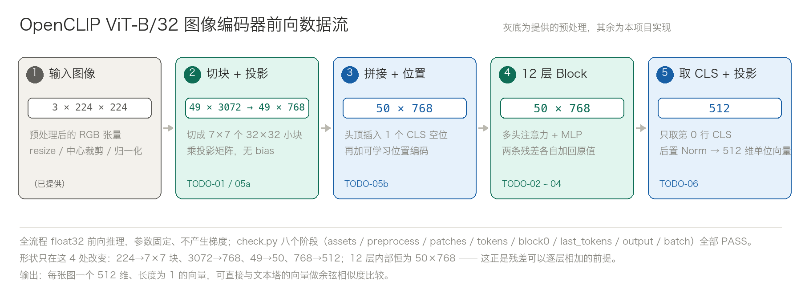

用 NumPy 复现 OpenCLIP ViT-B/32 图像编码器的前向计算
仅用 NumPy 实现图像塔的完整前向：输入 [B,3,224,224]，输出每张图一个 512 维、长度为 1 的向量。六个 TODO 共 10 处空位、22 行代码全部完成，未使用 PyTorch / OpenCLIP 包，参数固定不更新、不含任何训练。check.py --stage all 八个阶段全部 PASS，run.py 产出 (10,512)。运行环境为 Python 3.14.3 + NumPy 2.5.4 + Pillow 13.0.0，CPU 推理，全部数组 float32。
python -m pip install -r requirements.txt python check.py --stage all # 八个阶段数值检查 python run.py --output output_tokens.npz

图 1 图像塔前向数据流，标注了每个阶段的形状与本项目对应的 TODO
图像被切成 7×7 个 32×32 的块并投影到 768 维，头顶插入 1 个 CLS 空位后变 50 行，随后 12 层 Transformer 内部形状恒为 50×768——这正是两条残差可以逐层相加的前提；最后只取 CLS 那一行，经后置 Norm 与视觉投影压成 512 维并单位化。
容差：preprocess 为 atol=2e-6，output / batch 为 atol=2e-5，内部阶段 2e-4，统一 rtol=2e-4。下表为 check.py --stage all 的原始输出。
| 阶段 | 输出形状 | max_abs | mean_abs | 判定 |
|---|---|---|---|---|
| assets | 152 个张量 | — | — | PASS |
| preprocess | (10, 3, 224, 224) | 0.000e+00 | 0.000e+00 | PASS |
| patches | (2, 49, 3072) | 0.000e+00 | 0.000e+00 | PASS |
| tokens | (2, 50, 768) | 0.000e+00 | 0.000e+00 | PASS |
| block0 | (2, 50, 768) | 7.540e-06 | 2.274e-07 | PASS |
| last_tokens | (2, 50, 768) | 4.387e-05 | 2.406e-06 | PASS |
| output | (10, 512) | 6.780e-07 | 8.215e-08 | PASS |
| batch | (3, 512) | 4.619e-07 | 8.133e-08 | PASS |
三点解读：① patches 与 tokens 误差为 0，因为这两段只做重排、展平和一次投影，没有逐层浮点累加；② 误差从 block0（7.5e-06）出现，随深度累积到 last_tokens（4.4e-05），仍比容差 2e-4 低近一个数量级；③ output 经单位化后数值回到 O(1)，绝对误差降至 6.8e-07，batch 阶段（顺序 [1,0,1]，同一张图出现两次）与 output 同量级，说明批量与重复图不影响正确性。
patch 为 32×32，224/32 = 7，故每张图 7×7 = 49 块；每块含 3 个 32×32 通道平面，摊平为 3×32×32 = 3072。编号顺序为先左→右、再上→下，块内按 C→H→W 摊平。三步全是零拷贝的视图操作，只有最后一次 reshape 因内存不连续而真正复制一次。
b, c, h, w = images.shape
p = 32
nh, nw = h // p, w // p
grid = images.reshape(b, c, nh, p, nw, p) # [B,C,块行,行内,块列,列内]
return grid.transpose(0, 2, 4, 1, 3, 5).reshape(b, nh * nw, c * p * p)
| 步骤 | 轴顺序 | 含义 |
|---|---|---|
| 输入 | B, C, H, W | 通道优先的图像 |
| reshape | B, C, 块行, 行内, 块列, 列内 | H、W 各拆成「块号」与「块内位置」 |
| transpose(0,2,4,1,3,5) | B, 块行, 块列, C, 行内, 列内 | 把两个「块」轴提到一起 |
| reshape | B, 49, 3072 | 前两轴合成 patch 编号，后三轴合成像素编号 |
关键在于通道轴 C 的位置：它必须留在「块内」那一段的最前面。若把 C 挪到「块」之前，结果仍是 [B,49,3072]，check.py 不会报形状错，只会报数值不对，属于最难排查的一类错误。正确性用两种方式验证：4×4 玩具数组的 patch 0 恰为角点 [0,1,4,5]；真实输入下与「双层循环暴力切片」的结果 array_equal 为 True。
x - x.mean(axis=-1)
ValueError: operands could not be broadcast together with shapes (2,3) (2,)
(2,3) 沿 axis=-1 求均值后维度塌陷为 (2,)，广播从右往左对齐时 3 与 2 冲突。改为 x.mean(axis=-1, keepdims=True) 得到 (2,3,1)，保留的 1 可拉伸成 3，广播成立。helpers.py 中 LayerNorm 的 (B,L,1) 与 (B,L,D) 相减同理。
同类错误还有两处：权重方向——conv1 重排后是 [out,in]，直接 patches @ W 会报 core dimension 0 mismatch，必须写 W.T（除已是 [in,out] 的 visual.proj 外，本作业所有权重都需转置）；dtype 提升——缩放系数若写成 float64 标量，float32 结果会被整体提升为 float64 并触发 AssertionError: use float32，改用 np.float32(1.0/np.sqrt(64)) 即修复。
| 位置 | 写法 | 形状 |
|---|---|---|
| patchify | reshape + transpose(0,2,4,1,3,5) + reshape | [B,3,224,224] → [B,49,3072] |
| split_heads | reshape(B,N,H,D/H).transpose(0,2,1,3) | [B,N,768] → [B,12,N,64] |
| scores | (q @ k.transpose(0,1,3,2)) * 0.125 | [B,12,N,N] |
| 加权与合并 | coefficients @ v，再 transpose(0,2,1,3) 拼回 | [B,12,N,64] → [B,N,768] |
| 输出投影 | merged @ out_weight.T + out_bias | [B,N,768] |
| 残差与 MLP | residual = x + attn(norm1(x))；residual + gelu(u@W1.T+b1)@W2.T+b2 | [B,N,768] |
| patch 投影 | patches @ patch_weight.T（无 bias） | [B,49,3072] → [B,49,768] |
| CLS 与位置 | concatenate([cls, patches], axis=1) + position | [B,50,768] |
| 最终输出 | unit_vector(post_norm(tokens[:,0,:]) @ proj) | [B,768] → [B,512] |
q/k/v 由 in_proj_weight 一次投影后沿特征轴三等分；k 为四维，转置只交换最后两轴，写成 .T 会连带翻转 batch 与 head 分组。softmax、GELU、LayerNorm 与最终单位化均使用提供的 helper，以保证与 Torch 参考对齐。
@ 维度不匹配、np.float64 类型提升三类报错均单独复现并核对堆栈原文；作业附件 README.md、PPT-CODE-MAP.txt、transformer_steps.py、helpers.py 注释，以及课堂讲义 76 页。